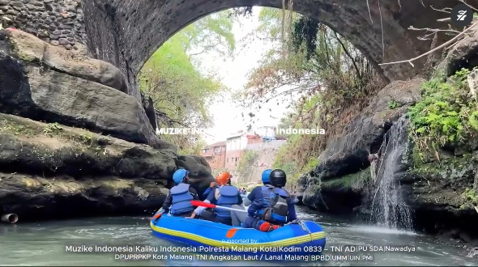

Videography
Visual storytelling, cinematography, video editing, dan produksi konten video.
Saya Santanu Wiryo Aji, seorang Multimedia Creative yang berfokus pada Videography, Photography, dan Graphic Design. Saya menggabungkan kreativitas, teknologi, dan visual storytelling untuk menciptakan karya yang menarik, bermakna, dan berkarakter.
Jelajahi Portofolio ↗Halo, saya Santanu Wiryo Aji, seorang Multimedia Creative yang berfokus pada Videography, Photography, dan Graphic Design.
Saya memiliki ketertarikan dalam menciptakan karya visual yang menggabungkan kreativitas, estetika, dan storytelling.
Melalui videografi, saya mengeksplorasi bagaimana gambar bergerak dapat membangun emosi dan menyampaikan cerita. Dalam fotografi, saya berfokus pada komposisi, pencahayaan, serta momen yang memiliki karakter.
Sementara melalui desain grafis, saya mengembangkan komunikasi visual yang menarik, fungsional, dan memiliki identitas yang kuat.
Bagi saya, setiap karya adalah kesempatan untuk menghadirkan perspektif baru melalui bahasa visual.
Tiga bidang kreatif yang menjadi fokus pengembangan karya visual saya.
Visual storytelling, cinematography, video editing, dan produksi konten video.
Komposisi visual, pencahayaan, fotografi kreatif, dan pengolahan foto.
Desain komunikasi visual, tipografi, komposisi grafis, dan pengembangan identitas visual.
Dokumentasi proyek dan karya pilihan dalam videografi, fotografi, dan desain grafis.

Karya video editing yang menampilkan dokumentasi kegiatan Susur Sungai Bango pada 9 September 2026 di Malang. Kegiatan lintas instansi dan komunitas ini berfokus pada pemantauan kondisi sungai, identifikasi potensi pencemaran, dan pelestarian sumber air.
Tonton Video ↗ Informasi KegiatanKoleksi foto pilihan dan eksplorasi komposisi visual akan ditambahkan di sini.
Galeri sedang disiapkanKarya desain grafis, eksplorasi tipografi, dan komunikasi visual.
Galeri sedang disiapkanTertarik berkolaborasi atau ingin mengenal karya saya lebih jauh? Informasi kontak profesional akan segera tersedia di sini.